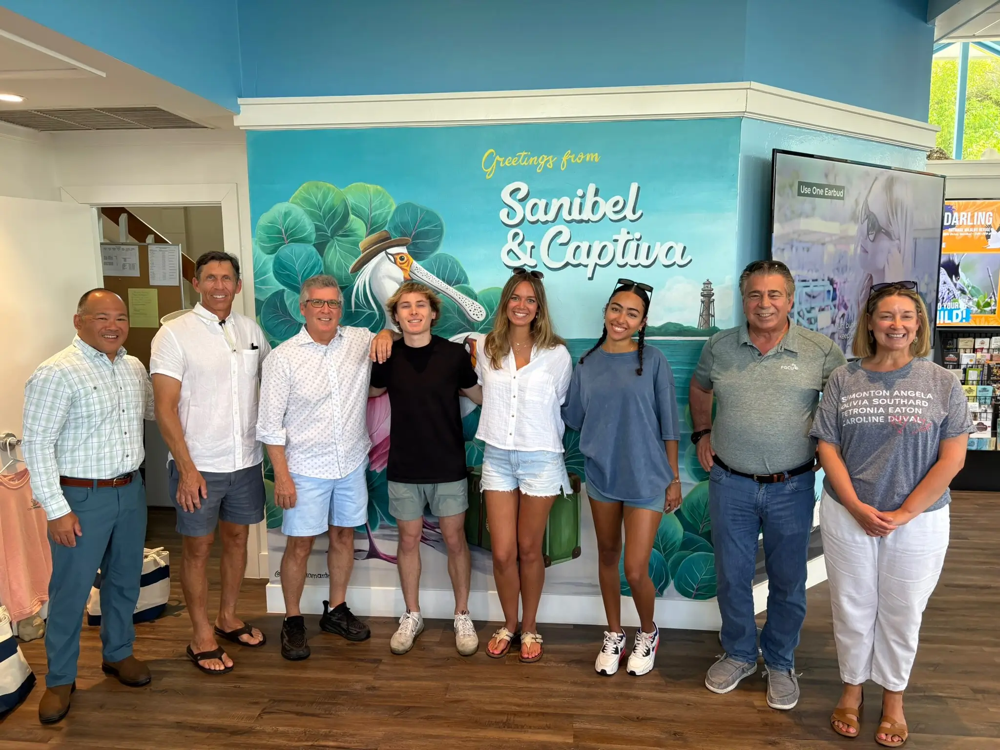

In March we met with Sanibel residents who were still rebuilding after Hurricane Ian and two follow-up hurricanes. Recovery data lived in dozens of places. Leaders and neighbors needed one clear view of progress.
We wrote down every question people asked. How many businesses are open? What percent of hotel rooms are available? How many building permits have been issued? The list grew to 40 metrics.
Data came from the Chamber of Commerce, Lee County, civic groups, and volunteers who walked the island. Every number was checked by people before we added it to the master spreadsheet. If a figure looked off, a volunteer called the source to confirm it.
Once the data was solid, we turned to Replit Agent. We described the goal in plain language:
Create a site that pulls data from this sheet, updates hourly, and shows clear charts and status bars.
Replit Agent generated the project structure, wrote the code, and handled hosting. We refined prompts and edited copy, colors, and accessibility. AI handled the build and the visuals; humans controlled the content.
We launched sanibel-solutions.com on May 31.
Clarity. Residents and officials can check recovery progress on any device.
Actionable data. City staff use the dashboard in meetings to spot slow areas and move resources.
Shared effort. Volunteers keep the spreadsheet current and the site refreshes automatically.
Start with reliable data, confirm it by hand, then let AI handle the heavy lifting of building and presenting it. If you have a project in mind, reach out. We can show you how an AI co-pilot speeds up the work while people keep the facts straight.